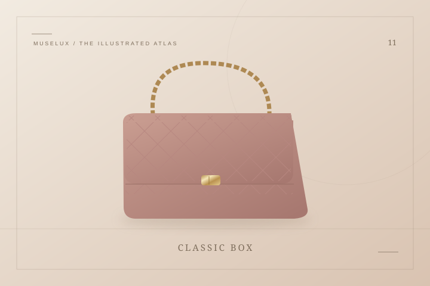

Celine
Classic Box经典方盒包
减去装饰，让比例慢慢说话。
打开词条 ↗THE HOUSE / 法国 / EST. 1945
思琳 — 用清楚的线条，留下余地
思琳的起点不是一只手袋，而是巴黎的儿童鞋履店。品牌逐渐扩展至成衣与皮具，也在不同创作时期呈现出鲜明的变化。Classic Box 的平整翻盖与金属扣，是不少读者认识极简皮具的入口；凯旋门链条符号则提供另一种辨识线索。阅读它，适合把注意力放在轮廓、肩带长度与开合方式上：没有很多装饰时，比例就成了主角。旧款与新系列的名称、刻印和供应情况会随年代变化，不能混为一谈。与其为一个抽象的风格标签着迷，不如看看某个具体形状，是否真的与你日常的衣着和步伐相处得来。
A FEW CHAPTERS IN TIME
Céline Vipiana 在巴黎创立品牌
业务逐步扩展至成人鞋履与皮具
Triomphe 凯旋门符号诞生
品牌纳入 LVMH 集团
Phoebe Philo 加入品牌
Hedi Slimane 开启新的创作时期
IN THE MUSELUX CATALOG
2 项收录：2 个经典设计词条。
KEEP READING